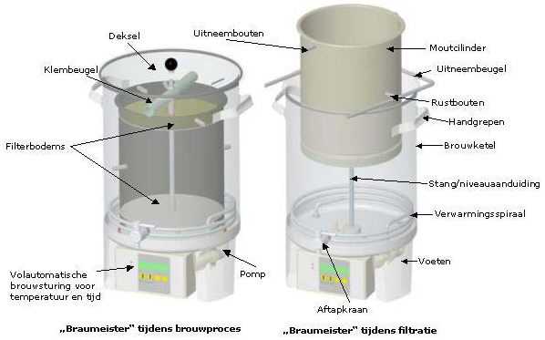
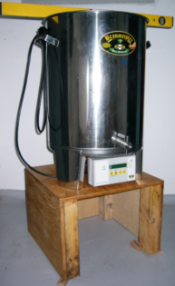
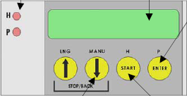

Braumeister
Handleiding
Een handleiding over het gebruik van de Speidel Braumeister, alsmede practische instructies hoe je hiermee een bier brouwt.
Kennismaking met de Braumeister
De Braumeister 20L is een apparaat voor het brouwen van ca. 20 liter bier. Het proces is in principe eenvoudig.
- Voorbereidingen
- recept opstellen.
- eventueel giststarter maken.
- Brouwproces starten.
- brouwketel omspoelen en eventueel de pomp testen.
- brouwproces (maischen en koken) programmeren.
- brouwketel vullen met water
- opwarmen tot inmaischtemperatuur.
- moutcilinder aanbrengen.
- geschrootte mout in moutcilinder storten.
- vervolgen met maischproces.
- moutcilinder omhooghalen, uit laten lekken.
- desgewenst spoelen met spoelwater.
- vervolgen met kookproces
- hop toevoegen, kooktijden zelf in de gaten houden.
- afkoelen
- wort naar het gistvat overbrengen
- Vergistingsproces starten.
- Brouwketel reinigen.
Deze verschillende stappen worden hierna verder uitgewerkt.
Componenten en onderdelen
Het apparaat bestaat uit een brouwketel en een wat kleinere moutcilinder waarvan de bodem tegelijk voor het filteren gebruikt wordt. De componenten en de bijgeleverde onderdelen zijn te vinden in Figuur 1.

Het principe van de werking is dat de moutcilinder in het midden gefixeerd wordt en naar onderen afgedicht wordt via een rubberring en een draadstang met vleugelmoer. De pomp zuigt de vloeistof buiten de moutcilinder aan en drukt deze van onderen door de moutcilinder naar boven tot de vloeistof over de rand van de moutcilinder stroomt. De filterbodems en de filterdoeken boven en onder zorgen ervoor dat de mout niet in de vloeistof buiten de moutcilinder komt. Binnen en buiten de moutcilinder bevinden zich verwarmingsspiralen op de bodem.
Op de stang staan markeringsstrepen voor het volume. De bovenste streep is 25 lit, de streep daaronder 20 lit. De afstand tussen 2 strepen is 5 cm, dus precies 1 cm per liter. Het maximale waterniveau mag bij het maischen 27 liter zijn, anders komt de vloeistof boven de moutcilinder te staan.
Technische gegevens
De technische gegevens van de Braumeister 20 lit.
- Gewicht: 15 kg
- Hoogte apparaat: 60 cm
- Hoogte binnen: 40 (42) cm
- Diameter (buiten): 40 cm
- Diameter (binnen): 35 cm
- Materiaal: RVS
- Verwarmingsspiraal vermogen: 2000 Watt
- Pomp: 23 Watt
- Stroomaansluiting: 230 V
- Zekering minimaal: 10 Ampere|
- Inhoud: 23 lit. wort (= ca. 20 lit. bier)
- Maximale vulstand: 25 lit (bovenste markering stang)
Opstelling
De Braumeister moet voor gebruik of voor het brouwen horizontaal op een stabiel en vast onderstel geplaatst worden. Ideaal is een stabiele houten kist of een niet te hoge tafel. Houd er rekening mee dat de Braumeister in gevulde toestand tot 50kg kan wegen en met kokend heet bierwort gevuld is.
Horizontaal moet de Braumeister waterpas gezet worden anders werkt de pomp niet goed. En om een goed maischproces te krijgen moeten alle delen van de moutcilinder goed doorstroomt worden. Wanneer het apparaat een paar graden uit het lood staat is dat al niet meer het geval.
Het is ook handig wanneer de Braumeister zo hoog van de grond staat dat het gistvat onder de aftapkraan geschoven kan worden.

Tijdens het brouwen mag de Braumeister niet bewogen en verplaatst worden. De handgrepen dienen enkel voor transport en hantering in lege toestand. Houd kinderen absoluut buiten het bereik van het toestel terwijl het werkt.
Voor het omhoog trekken van de moutcilinder na het maischen is wel wat kracht nodig, zeker door de onderdruk die bij het omhoogtrekken ontstaat.
Reiniging
De Braumeister moet na het brouwen meteen worden gereinigd. Probeer het opdrogen van wort-en moutresten te vermijden, dat maakt het reinigen een stuk gemakkelijker. Alle roestvrijstalen onderdelen kunnen worden gereinigd met een in de handel verkrijgbaar spoelmiddel. Niet geschikt zijn schuurmiddelen en sponzen of borstels die krassen maken. De verwarmingsspiraal kan het best met een keukensponsje worden schoon gemaakt.
Voor het schoonmaken van de pomp kun je het beste eerst de ketel schoonmaken. Daarna wat verdunde desinfectievloeistof in de ketel doen en de pomp handmatig inschakelen. Met een ploemper (gootsteen-ontstopper) krijg je een snelle reiniging van de uitstroomopeningen. Meestal komen de afzettingen en kafjes mee naar buiten. Het water wordt verversd en het proces wordt herhaald tot alles schoon is. Meestal hoef je dan de pomp niet te demonteren om schoon te maken. Volgens opgave van de fabrikant hoef je de pomp niet te demonteren zolang deze rustig loopt.
De pomp en de aandrijfkogel erin moeten eveneens regelmatig worden uitgespoeld. Vooraf wordt er meermaals vers water door de pomp gepompt. Om te pomp te openen, plaatst u de Braumeister gewoon op zijn kop en draait u de schroeven los, die slechts handvast aangedraaid mogen zijn. De pomp kan eenvoudig volledig van de Braumeister worden verwijderd door de stekkerverbinding los te draaien. Bij het reinigen van de brouwketel moet erop worden gelet dat er geen spatwater of vocht op de elektrische componenten terechtkomt. Telkens wanneer de Braumeister wordt gereinigd, moet eerst de stroomtoevoer worden afgesloten.
Voor het brouwen moeten de Braumeister en de bijbehorende inbouwstukken enkel met warm water van stof en vuil worden ontdaan. De pomp en leidingen moeten eveneens worden gespoeld door rond te pompen.
Wanneer je de pomp langer dan een paar seconden voor de reiniging laat lopen, dan moet deze goed ontlucht zijn om drooglopen te voorkomen. De pomp wordt goed ontlucht door deze meerdere keren achter elkaar in- en uit te schakelen.
Zorg ervoor dat u ook de dichting van de moutcilinder en de aftapkraan mee reinigt. Zorg ervoor dat er in de Braumeister geen spoelmiddelresten achterblijven die een negatieve invloed kunnen hebben op de schuimhoudbaarheid van het bier.
Na het schoonmaken kun je de Braumeister het beste een tijdje op zijn kop zetten zodat deze beter doogt.
Opslag
De Braumeister moet droog bewaard worden. Vermijd contact met ijzerhoudende of roestige voorwerpen.
Ingebruikname
De Braumeister moet voor het eerste gebruik grondig met lauwwarm water grondig gereinigd worden, zie Paragraaf 1.4.
Zorg voor een goede opstelling van de Braumeister, zie Paragraaf 1.3.
Voor de rest is de Braumeister klaar om direct in gebruik genomen te worden.
Besturing

LED
Aan de linkerkant bevinden zich twee led’s.
- H : Verwarming
- P : Pomp
DISPLAY
Hierop verschijnen de mededelingen.
PIJL OMHOOG (LNG)
- Tijd / Temp verhogen in de programmeermodus en in de manuele modus.
- Taalinstellingen (3 sec. ingedrukt houden).
PIJL OMLAAG (MANU)
- Tijd / Temp verlagen in de programmeermodus en in de manuele modus.
- Overschakelen naar manuele modus (1 sec. ingedrukt houden).
PIJL OMHOOG + PIJL OMLAAG
- Stop automatische modus.
- Terugkeer uit manuele modus.
- Je kan hiermee ook het proces tijdelijk onderbreken. Op het scherm wordt vervolgens gevraagd of je het programma wilt afbreken of dat je wil doorgaan. Je kunt dan bijvoorbeeld even mout met een pollepel roeren en daarnaa weer verdergaan met het programma.
START (H)
- Starten van het automatisch brouwen.
- Bevestigingsknop in het brouwproces.
- Verwarming aan / uit in de manuele modus.
ENTER (P)
- Overschakelen naar programmeermodus (1 sec. ingedrukt houden).
- Bevestiging van de waarden in de programmeermodus.
- Bevestiging van vragen in de automatische modus.
- Pomp aan / uit in de manuele modus.
Taalkeuze
Vanuit de beginsituatie kun je een keuze voor de taal maken. De mogelijkheden zijn:
- Duits
- Engels
- Frans
- Spaans
- Druk 3 seconden op de knop PIJL OMHOOG (LNG). Het menu voor de taalkeuze verschijnt.
- Maak met de pijltjestoetsen de gewenste keuze.
- Druk op de knop ENTER.
Pomp
De circulatiepomp kan met de knop ENTER (P) in- en uitgeschakeld worden.
Het is belangrijk dat de pomp na het vullen met brouwwater wordt ontlucht zodat deze op vol vermogen kan draaien. Dat gebeurt door de pomp meermaals in en uit te schakelen wanneer het water er al in is (tot er geen luchtbellen meer ontsnappen en nauwelijks nog pompgeluiden waar te nemen zijn).
Deksel
Het deksel helpt om snel de gewenste temperaturen te halen bij het verwarmen. De ventilatiesleuven voorkomen drukvorming in de ketel en zorgen voor een vlotte luchtcirculatie. Bij hoge temperaturen condenseert er water op de onderkant van het deksel. Houd er bij het optillen van het deksel rekening mee dat de dekselrand boven de ketelopening wordt gehouden, opdat het aflopende condenswater (bij het schuin houden) terugloopt en niet wegstroomt.
Hygiëne
Hygiëne is het hoogste gebod bij het brouwen van bier. Vooral tijdens de ‘koele’ behandeling (bij het afkoelen, op vaten tappen en het vergisten) wordt het bier of bierwort blootgesteld aan infectiegevaar, waardoor bier kan bederven en al het werk tenietgedaan wordt. Let dan ook speciaal op dat de vaten (gistvat, flessen) en werkmaterialen (lepels, kranen, dichtingen) absoluut zuiver zijn.
Sulfiet is uitermate geschikt voor de desinfectering van deze vaten en voorwerpen. Het is verkrijgbaar in de gespecialiseerde wijnhandel en zaken voor hobbybrouwers. Dit poeder wordt gemengd met water en verdund en is geschikt om in het waterslot te doen, om het gistvat, ander gereedschap en zelfs de handen te desinfecteren. Het is aan te raden om bijvoorbeeld een emmer met sulfiet te mengen, waarin tijdens het brouwen en voor het overtappen de handen en gereedschappen worden gedesinfecteerd. Het gistvat wordt afgesloten met daarin 3-5 liter sulfiet en blijft enkele uren staan. Tussendoor het vat enkele keren schudden en voor gebruik leegmaken en laten uitdruipen. Uitspoelen met water is niet nodig. Enkele druppeltjes of resten van het sulfiet in het bier vormen daarbij geen enkel bezwaar.
De opslag- en rijpvaten worden net zoals het gistvat gedesinfecteerd. Wordt het bier na het gisten overgetapt in beugelflessen om te rijpen en te bewaren, dan worden de flessen gedesinfecteerd door ze op te warmen in de bakoven. De rubberdichtingen worden verwijderd en afgekookt in heet water of ondergedompeld in een sulfietoplossing. De flessen worden in de bakoven verhit tot een temperatuur van ca. 130°C. Laat de flessen daarna in de uitgeschakelde bakoven afkoelen tot kamertemperatuur en sluit ze met de gedesinfecteerde dichtingen. Zodoende is gegarandeerd dat het gegiste bier in absoluut zuivere flessen wordt overgeheveld. Dat moet al enkele dagen voor het einde van het gistingsproces gebeuren, zodat het overtappen snel en zonder drukte kan gebeuren.
Brouwen
Inleiding
De bierproductie met de Braumeister kan in verschillende fasen worden ingedeeld, waarvan elke fase hier afzonderlijk wordt toegelicht. Deze fasen worden eerst algemeen beschreven, zodat het brouwproces van toepassing is op alle biertypes en - recepten.
Een concreet brouwvoorbeeld voor de beginnende brouwer en een speciaal recept met de precieze hoeveelheden, brouwtijden en temperatuurniveaus vindt u in het volgende hoofdstuk. Vooraleer u bier begint te brouwen, kunt u best eerst eens het overzicht bekijken van de afzonderlijke stappen die u moet volgen om een afgewerkte drank te maken. Opdat u geen stappen zou overslaan en achteraf ook een overzicht krijgt van uw brouwprocessen, raden we aan om een brouwverslag bij te houden (zie verslagformulier in bijlage of op www.speidel-behaelter.de ). Nog een goede raad: bij de eerste brouwpoging trekt u het best een dag tijd uit en kunt u eventueel met een tweede persoon brouwen, aangezien het zo gewoon leuker is en wat hulp af en toe best welkom is. Vergeet ook hierbij niet dat bier brouwen ook wat ervaring vereist en dat men er steeds beter in wordt naargelang men het meer doet. Laat u dus niet ontmoedigen wanneer het eerste bier niet helemaal aan uw verwachtingen voldoet.
Voorbereidingen
Ingrediënten
Zorg ervoor dat u de nodige brouwingrediënten (hop, mout en gist) tijdig in huis hebt. Het is daarbij van belang dat de mout vers is. Na het schroten (grof malen van de korrels – niet te fijn) moet de mout zo snel mogelijk verwerkt worden. De hoeveelheden variëren licht naargelang het recept, waarbij de hoeveelheid mout tussen 4 en 5 kg en de hoeveelheid hop tussen 30-50 g ligt. De hop wordt in geperste vorm aangeboden als pellets of als hopbloemen. Om het bier te laten gisten, wordt gedroogde gist aangeraden, aangezien die eenvoudig kan worden bewaard en langer houdbaar is. Deze ingrediënten zijn verkrijgbaar in de handel voor hobbybrouwers of via het internet. Een derde mogelijkheid om de ingrediënten aan te schaffen, is een brouwerij in uw buurt. Navragen kan geen kwaad!
Reiniging apparatuur en hulpmiddelen
Voor het brouwen wordt de Braumeister uitgespoeld met warm water en wordt de pomp doorgespoeld door ze in te schakelen. De andere gereedschappen zoals densimeter, pollepel en gistkuip liggen klaar en zijn eveneens gereinigd. Zie hierover ook de aanwijzingen in de hoofdstukken Hygiëne en Reiniging.
Ontharding brouwwater
Indien nodig, kan het brouwwater onthard worden. Daartoe wordt het water (koud leidingwater) ca. 30 minuten uitgekookt in een ketel, vervolgens afgekoeld en tijdelijk opgeslagen (bijv. in de gistkuip) tot er wordt gebrouwen. De afgescheiden kalk heeft zich afgezet op de bodem van de ketel en wordt verwijderd. De Braumeister is ontworpen voor het brouwen van ca. 20 l afgewerkt bier (gewoon bier). Hiervoor is dan 25-30 l brouwwater nodig. Voor de beginner of voor de eerste brouwpogingen kan echter ook normaal (hygiënisch onberispelijk, kleur- en geurloos) koud leidingwater worden gebruikt om de inspanningen in het begin enigszins binnen de perken te houden. In principe moet het brouwwater een hardheid van minder dan 10°dH hebben. Hoe zachter het water, hoe beter het geschikt is om te brouwen.
Programmering
Om het brouwproces geautomatiseerd te laten verlopen moet het proces, temperaturen en tijden, eerst geprogrammeerd worden.
- Steek de stekker van de Braumeister in de contactdoos. De besturing bevindt zich dan in de begintoestand.
- Druk 1 sec. op de knop ENTER. De bediening schakelt over naar de programmeermodus. Met de pijltjestoetsen kies je de temperatuur en de tijd die je steeds bevestigt met ENTER.
- Programmeer nu achtereenvolgens de verschillende stappen. De standaardwaarden staan in de volgende tabel weergegeven.
| Stap | Temp | Tijd |
|---|---|---|
| Inmaischen | 38°C | 5 min. |
| Rust 1: Eiwitrust | 53°C | 30 min. |
| Rust 2: Maltoserust | 63°C | 30 min. |
| Rust 3: Versuikeringsrust | 73°C | 15 min. |
| Rust 4: Uitmaischen | 78°C | 0 min. |
| Rust 5: | 0 | 0 min. |
| Koken (met hop) | 100°C | 80 min. |
Opmerking:
- Inmaischen: de fabrikant beveelt aan bij het inmaischen een rustperiode te hanteren zodat de mout goed water opneemt (hydrateer). Er zijn verschillende brouwers die hier een langere tijd hanteren, tot ca. 20 min.
- Rust 5: staat op 0 en wordt alleen bij speciale recepten gebruikt.
- De opwarmtijd bedraagt ca. 2 min. per °C.
- Na het bevestigen van alle programmaniveaus met de ENTER-toets keert u weer terug naar de startweergave.
- Druk op START om het brouwproces te starten. Volg de aanwijzingen van het programma.
Brouwproces
Het mengen van geschrote mout en water wordt ook maischen genoemd. Het doel van het hele beslagproces is het moutzetmeel onttrekken aan de mout en dat om te zetten in suiker met behulp van enzymen die aanwezig zijn in de mout. De verschillende enzymen zijn actief op verschillende temperaturen, dus moeten de verschillende temperatuurniveaus dan ook doorlopen worden.
Haal de moutcilinder uit de ketel.
Vul de ketel met 23 liter water. Dit is ca. 2 cm. onder de bovenste markering van 25 lit. op de stang. Op het display staat de melding Wasser eingefüllt? of Water filled in?.
Druk op ENTER om te bevestigen dat het water in de ketel is gedaan. De pomp en de verwarming worden nu ingeschakeld. De pomp wordt meermaals in- en uitgeschakeld om te kunnen ontluchten. De pomp en verwarming blijven ingeschakeld tot de geprogrammeerde inmaischtemperatuur wordt bereikt. Op de display worden de gewenste en huidige temperatuur weergegeven. Wanneer de inmaischtemperatuur wordt bereikt klinkt een signaal.
Druk op ENTER. De pomp wordt nu uitgeschakeld.
Plaats de moutcilinder met de rubberen dichting naar onderen in de ketel en op de draadstang. Controleer of de cilinder goed, gecentreerd en vlak op de bodem ligt.
Plaats de eerste filterplaat met met daarop de gaaszeef in de moutcilinder, met de mantelhuls naar boven.
Schep het mout voorzichtig in de moutcilinder en en roer het mout grondig tot alles goed doorweekt is. Doe dit deel voor deel tot alle mout is toegevoegd.
Leg de tweede gaaszeef op de mout en daarop de tweede filterplaat met de mantelhuls naar boven.
Druk de moutcilinder naar onderen en maak deze goed vast met de beugel en de vleugelmoer. De moutcilinder moet goed strak op de bodem zitten.
Bevestig het vullen met de knop ENTER. Voor alle zekerheid wordt nog eens gevraagd “Mout toegevoegd?”.
Druk op START.
- Het eigenlijke brouwproces wordt nu gestart. De pomp en de verwarming worden ingeschakeld. Het wort stijgt in de moutcilinder omhoog en loopt aan de bovenkant over. De kringloop is ontstaan en het maischproces doorloopt de ingeprogrammeerde fases.
- Na het verstrijken van de geprogrammeerde maischfases klinkt weer een signaal en de melding End of phase reached.
Druk op ENTER. De pomp wordt uitgeschakeld. Op het display verschijnt de melding Remove malt pipe.
Verwijder de vleugelschroefen de klembeugel van de moutcilinder.
Leg de druipbeugel op de rand van de brouwketel.
Trek met de uitneembeugel de moutcilinder voorzichtig en langzaam uit de ketel. Hang de onderste uitneembeugel van de moutcilinder in de houderbeugel. De wort druipt nu uit de moutcilinder in de ketel.
Giet langzaam het spoelwater van max. 78°C boven in de moutcilinder.
Na 15-20 min. mout de moutcilinder volledig verwijderd worden. De bostel (moutdraf) gaat in de afvalcontainer.
Waarschuwing: Werk altijd met hittebestendige handschoenen om verbranding te voorkomen.
Druk op ENTER.
Druk op START om het koken van de wort met de hop te starten. De pomp en de verwarming worden ingeschakeld en de automatische modus wordt voortgezet.
Voeg het eerste hopzakje 10 min. na aanvang van het kokek toe. Eventuele andere hopzakjes volgens recept toevoegen. Na het verstrijken van de kooktijd klinkt een signaal en verschijnt op het display de melding Hopfenkochen beendet (Boiling completed).
Druk op ENTER. Het brouwproces is afgelopen. De verwarming wordt uitgeschakeld.
Afkoelen
Vanaf nu moet u absoluut steriel werken, aangezien bij alle verdere stappen van het proces verontreinigingen door de bacteriën in de lucht of door onzuivere toestellen het resultaat van uw werk kunnen tenietdoen. Alle toestellen die u vanaf nu gebruikt, moeten grondig gereinigd en gedesinfecteerd worden. Volg de aanwijzingen in Paragraaf 1.4
Zorg dat alle te gebruiken hulpmiddelen gedesinfecteerd zijn.
Roer met een lange pollepel krachtig in de hete wort om een “whirlpooleffect” te laten ontstaan. Dit bevordert het afzinken van de in de wort aanwezige troebele stoffen waardoor het wort helderder wordt.
Plaats de wortkoeler in de wort en koel de wort tot een temperatuur van ca. 20°C.
Wanneer je tijdens het koelen de pomp aanzet dan stroomt de warme vloeistof langs de koelspiraal en gaat het afkoelen sneller. En wanneer je ook de verwarming inschakelt en de thermostaat op een lage temperatuur instelt, bijvoorbeel 15 °C, dan kun je de temperatuurdaling op de display volgen.
Haal de wortkoeler uit de wort.
Sluit een slang op de aftapkraan aan en laat de wort in het gistvat lopen.
Om de laatste liters uit de ketel te halen kun je de ketel voorzichtig schuin plaatsen.
Reinig de Braumeister hierna zo snel mogelijk zodat er geen resten kunnen opdrogen.
Hoofdgisting
De suikers moeten nu m.b.v. gist omgezet worden in alkohol. Bij het opstellen van het recept is de keuze gemaakt voor een bovengistend of ondergistend bier. Deze twee soorten vergisten bij verschillende temperaturen.
Zorg dat alle te gebruiken hulpmiddelen gedesinfecteerd zijn.
- Voeg de gist (droge of met gisstarter?) aan de wort in het gistvat toe.
- Sluit het gistvat af met een deksel met waterslot.
- Plaats het gistvat in een donkere ruimte met de vereiste temperatuur.
Bottelen
Wanneer de hoofdgisting is afgelopen kan het bier in de flessen. Door suiker toe te voegen vindt er een nagisting in de fles plaats.
Zorg dat alle te gebruiken hulpmiddelen gedesinfecteerd zijn.
- Los de benodigde hoeveelheid (volgens recept) suiker op in gekookt en afgekoeld water.
- Voeg de suikeroplossing aan de inhoud van het gistvat toe en roer deze voorzichtig zonder teveel droesem op te dwarrelen.
- Vul de flessen.
- Bewaar het bier ca. 1 week op dezelfde temperatuur als bij de hoofdgisting.
- Bewaar het bier koel en donker.
Resources
Braumeister Resources Websites
- Speidel website fabrikant
- Speidel Braumeister - How to brew with it
- International Speidel Braumeister forum
Video’s